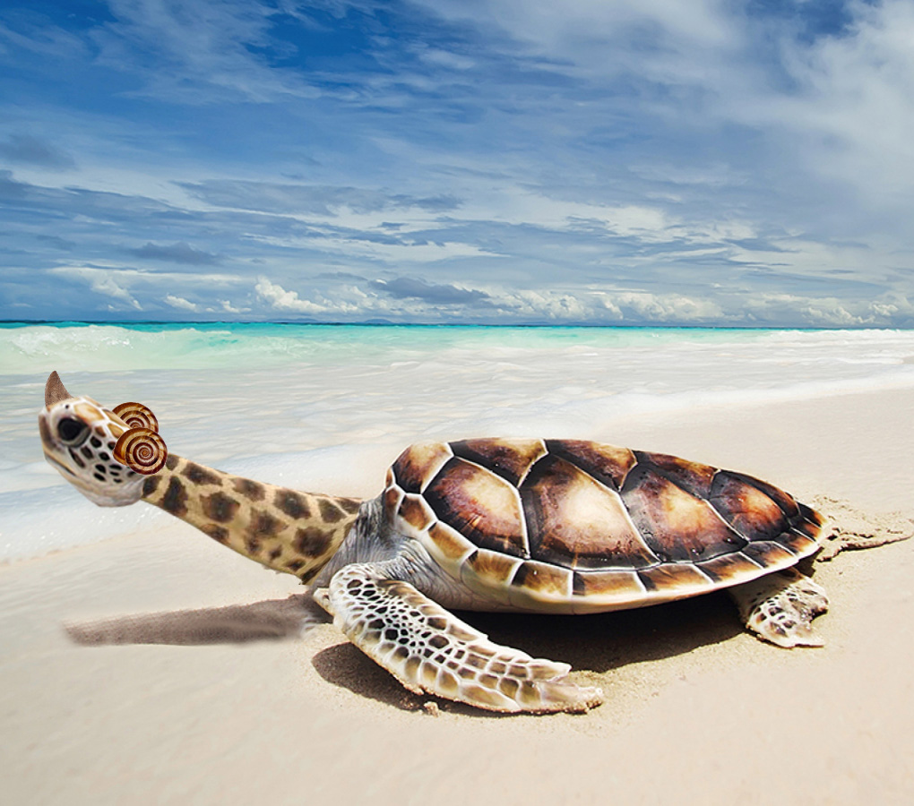
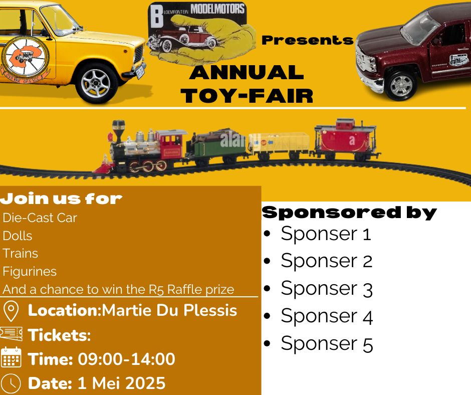
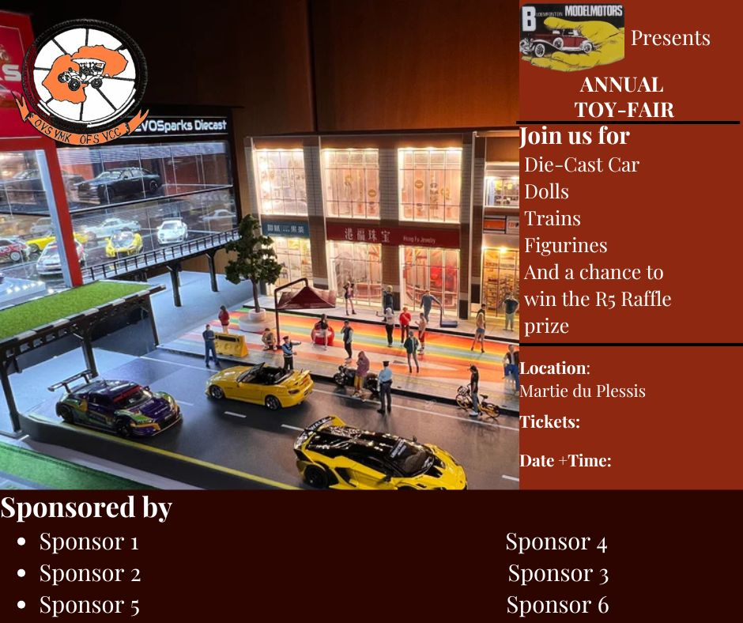
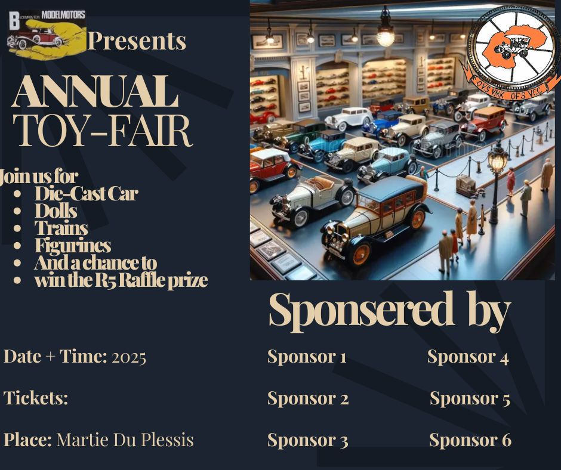
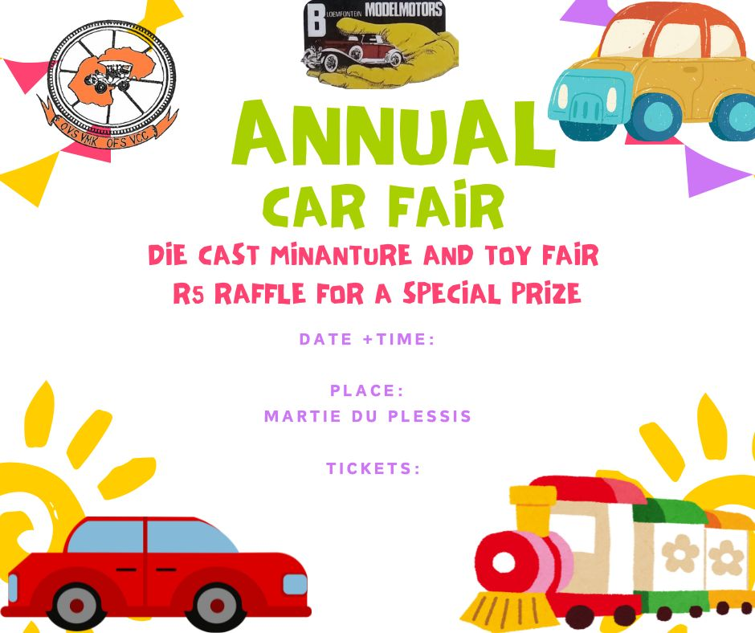
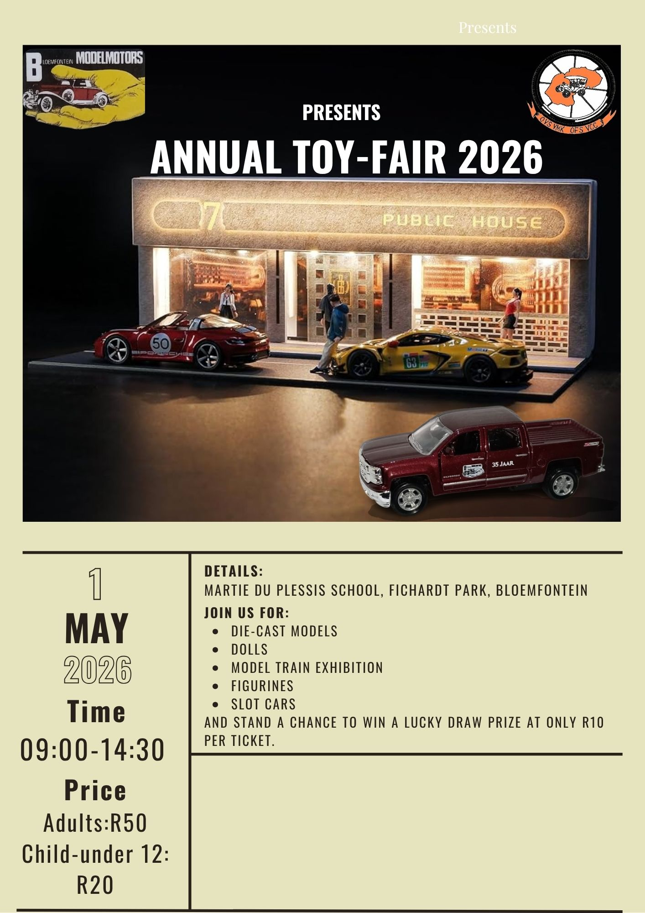
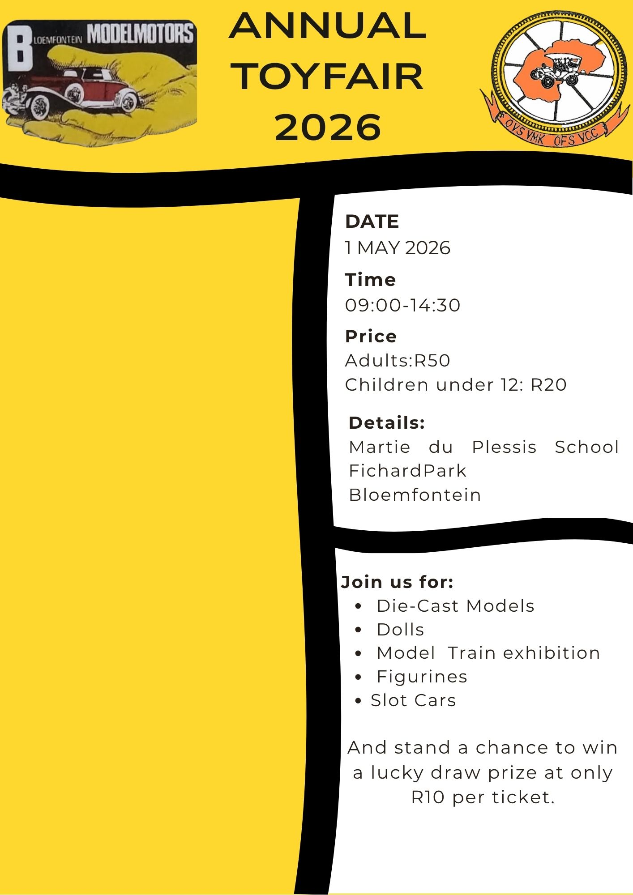

Design and code, from poster to prototype
I’m a UI artist and web developer who bridges design and code. I care about the details that make a site feel finished: clear hierarchy, consistent spacing and layouts that work on every screen. From promotional posters to responsive websites, I turn ideas into polished, usable designs.
Skills
- HTML & CSS
- Responsive Design
- JavaScript (DOM & interactivity)
- UI Design
- Figma
- Adobe Creative Tools
- Poster & Graphic Design
What I Do
UI Design
Interface layouts with strong hierarchy and readable type, planned and prototyped in Figma.
Web Development
Responsive, mobile-friendly sites built from scratch with HTML, CSS and JavaScript, including this one.
Poster & Graphic Design
Promotional posters, infographics and social graphics with clear messaging and bold visuals.
Research-Led Design
I study references and test layout options before I commit, so each design decision has a reason.
Beyond the Screen
Miniature Painting
I hand-paint fantasy miniatures. It trains the same habits I use in design: patience, colour choices and fine detail.
Featured Projects
A selection of my poster, infographic and UI work.


.png)









Looking for a junior UI designer or web developer?
I’m open to internships and entry-level roles. Send me a message and let’s talk.